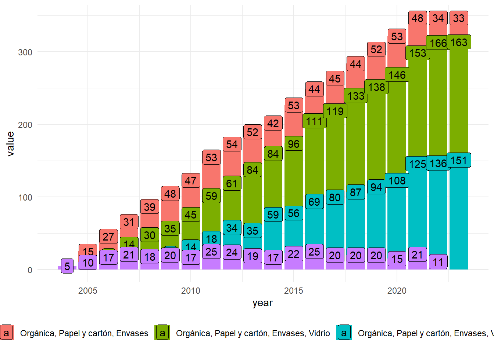
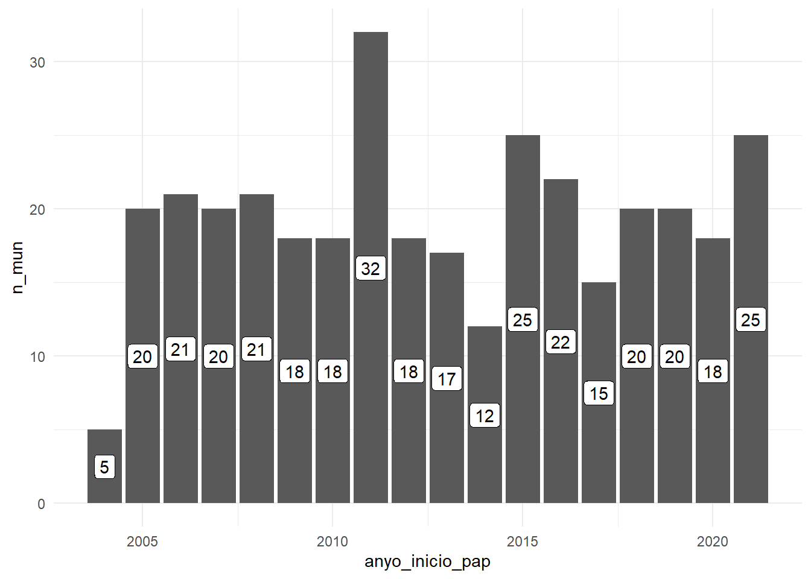
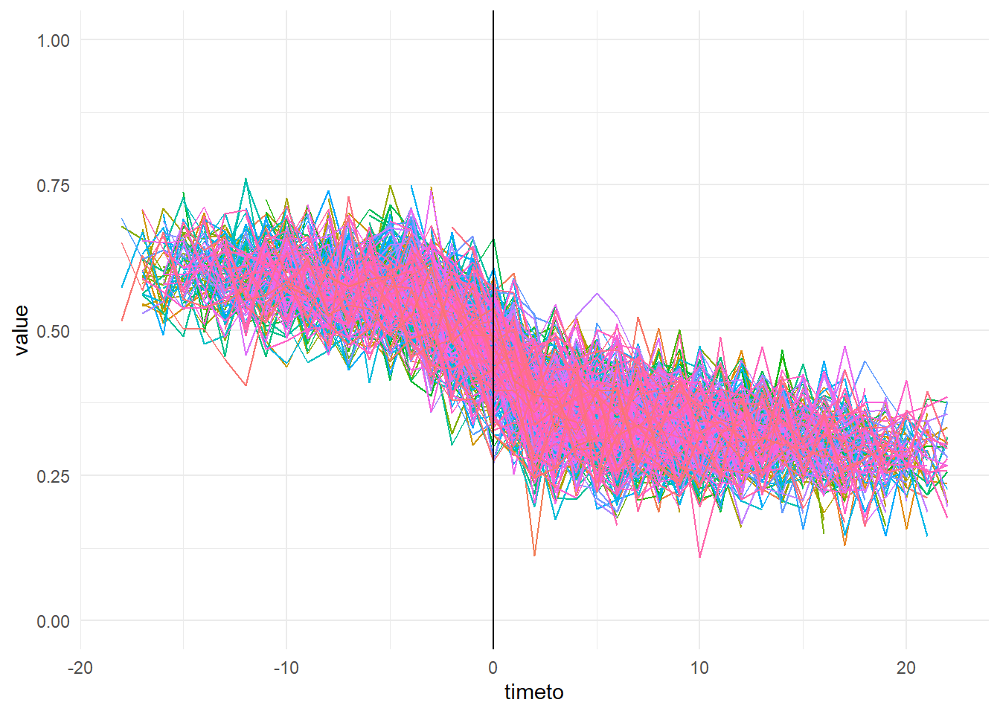
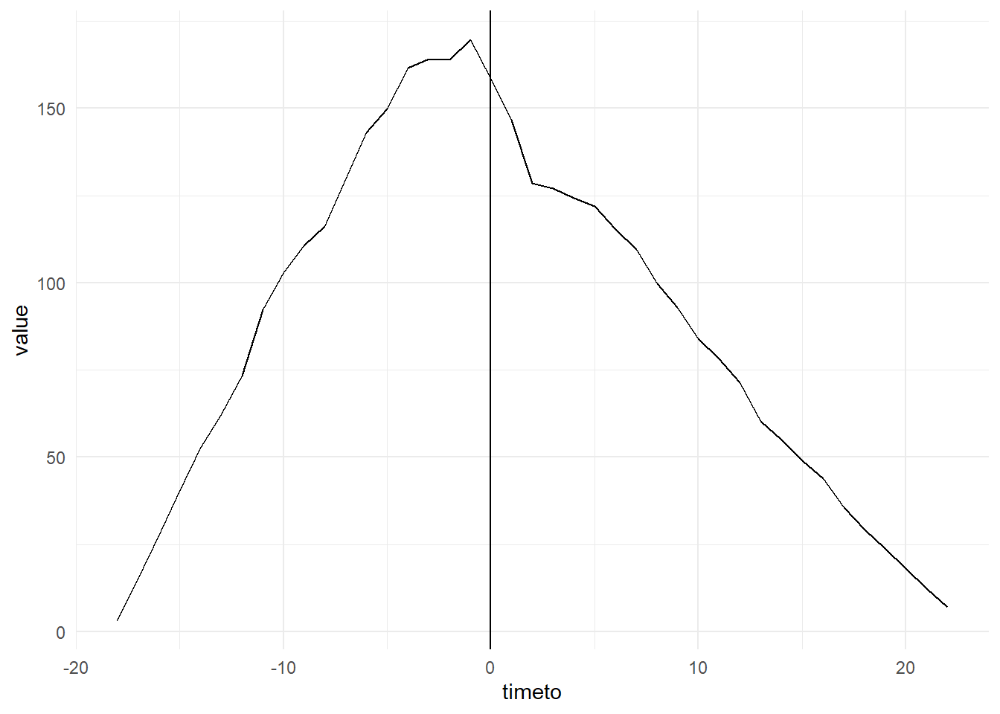
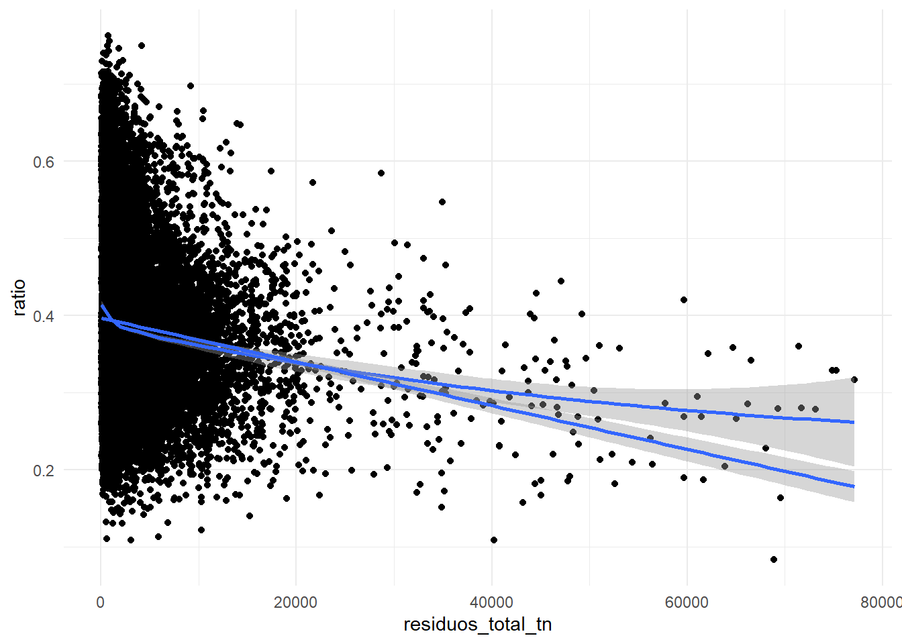
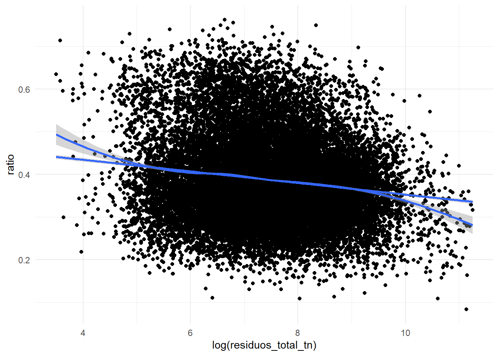
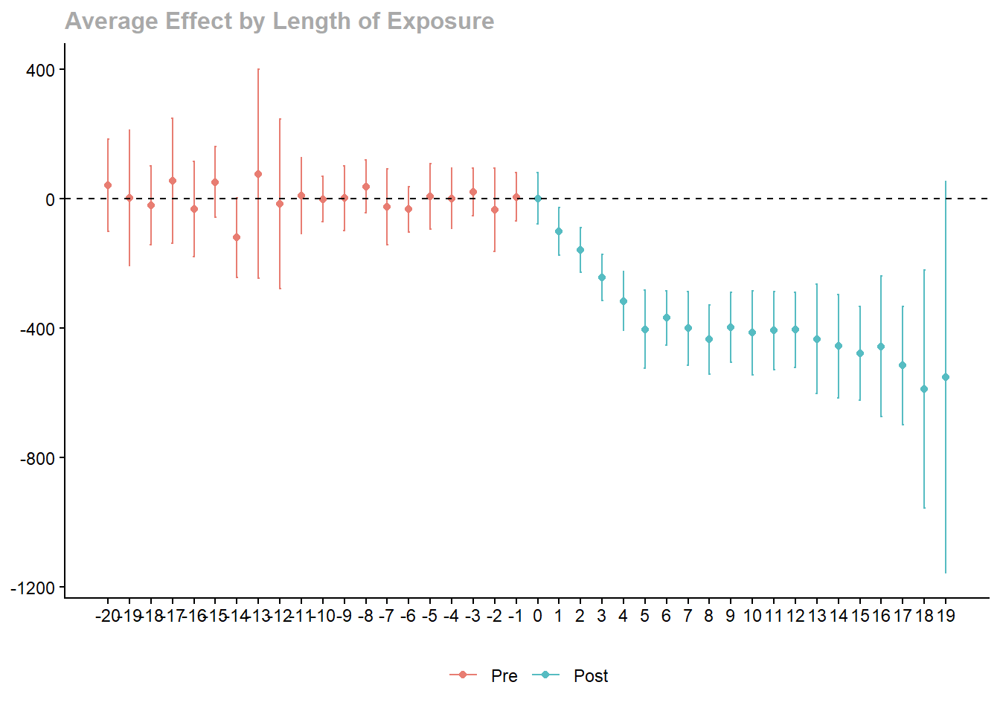
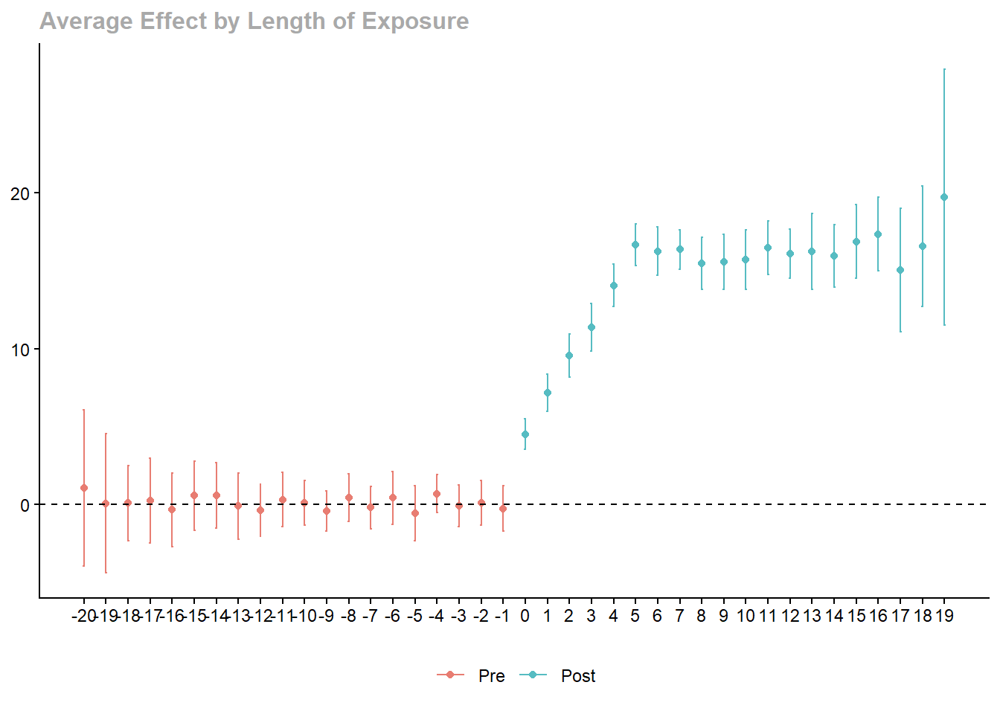
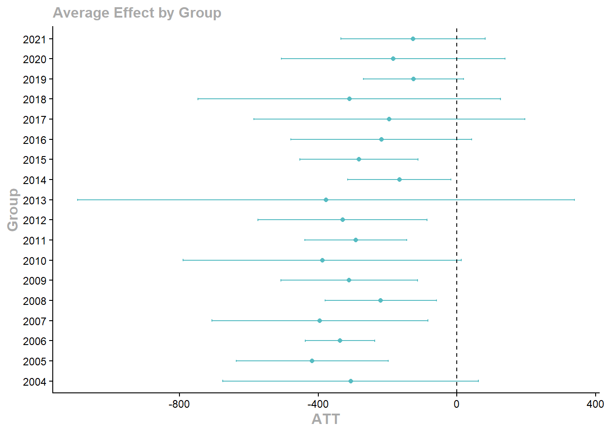
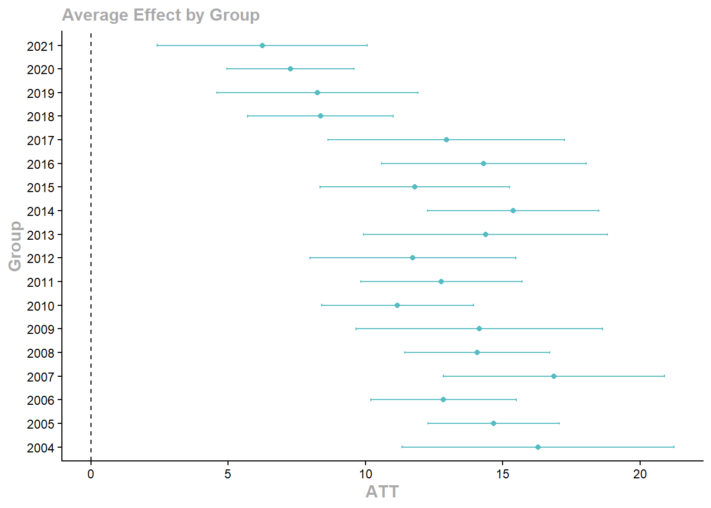

# install.packages(c(
# "tidyverse", "janitor", "lubridate", "stringr",
# "fixest", "did", "modelsummary", "broom", "scales"
# ))
library(tidyverse)
library(janitor)
library(lubridate)
library(stringr)
library(fixest)
library(did)
library(modelsummary)
library(broom)
library(scales)
theme_set(theme_minimal())
set.seed(1234)Examen práctico no resuelto: evaluación del sistema PaP de recogida de residuos
Versión para practicar con datos sintéticos
1 Instrucciones
Este documento es una versión no resuelta del examen práctico sobre la evaluación del sistema de recogida puerta a puerta (PaP).
El primer bloque de código genera datos sintéticos y crea dos ficheros CSV con formato europeo:
PaP.csvEstadisticas_residuos.csv
A partir de ahí, el ejercicio consiste en elaborar un breve informe respondiendo a los bloques planteados. Puedes escribir código, tablas, gráficos e interpretación debajo de cada pregunta.
El examen está pensado para resolverse en 90 minutos, sin ayuda de IA, pero con posibilidad de consultar internet o documentación.
1.1 Ficheros de datos generados
Tras ejecutar la sección de generación de datos, tendrás disponibles en tu directorio de trabajo:
PaP.csvEstadisticas_residuos.csv
Ambos ficheros usan:
- separador
;; - coma como separador decimal.
2 0. Paquetes y generación de datos sintéticos
3 1. Generación de datos sintéticos
En el examen original se proporcionan dos ficheros:
PaP.csv;Estadisticas_residuos.csv.
Como no disponemos de esos datos, creamos dos bases sintéticas y luego las exportamos a CSV con formato europeo, es decir, separador ; y coma decimal. Después las volvemos a importar con read_csv2() para reproducir el flujo real del examen.
3.1 1.1. Base municipal
n_muni <- 947
years <- 2000:2023
municipios <- tibble(
codigo_municipio_base = str_pad(as.character(1:n_muni), width = 5, pad = "0"),
municipio = paste("Municipio", str_pad(1:n_muni, 3, pad = "0")),
provincia_codigo = sample(
c("08", "17", "25", "43"),
size = n_muni,
replace = TRUE,
prob = c(0.55, 0.20, 0.12, 0.13)
),
codigo_municipio = paste0(provincia_codigo, str_sub(codigo_municipio_base, 3, 5)),
comarca = paste("Comarca", sample(1:35, n_muni, replace = TRUE)),
poblacion_base = round(exp(rnorm(n_muni, log(3500), 1.05))),
renta_media = round(rnorm(n_muni, 24500, 4200)),
densidad = round(exp(rnorm(n_muni, log(180), 1.1)), 1),
zona_costera = rbinom(n_muni, 1, 0.28),
rural = as.integer(poblacion_base < 2500)
) |>
mutate(
provincia = case_when(
provincia_codigo == "08" ~ "Barcelona",
provincia_codigo == "17" ~ "Girona",
provincia_codigo == "25" ~ "Lleida",
provincia_codigo == "43" ~ "Tarragona"
),
poblacion_base = if_else(row_number() == 10, poblacion_base * 25, poblacion_base),
poblacion_base = if_else(row_number() == 20, poblacion_base * 18, poblacion_base)
)
glimpse(municipios)Rows: 947
Columns: 11
$ codigo_municipio_base <chr> "00001", "00002", "00003", "00004", "00005", "00…
$ municipio <chr> "Municipio 001", "Municipio 002", "Municipio 003…
$ provincia_codigo <chr> "08", "17", "17", "17", "43", "17", "08", "08", …
$ codigo_municipio <chr> "08001", "17002", "17003", "17004", "43005", "17…
$ comarca <chr> "Comarca 11", "Comarca 12", "Comarca 1", "Comarc…
$ poblacion_base <dbl> 4965, 15251, 5620, 5838, 1986, 59040, 3287, 2076…
$ renta_media <dbl> 23883, 27330, 27909, 31876, 19387, 26085, 25587,…
$ densidad <dbl> 522.3, 47.2, 402.3, 298.5, 392.4, 139.0, 264.5, …
$ zona_costera <int> 0, 0, 0, 0, 0, 0, 0, 0, 0, 0, 1, 0, 0, 0, 0, 0, …
$ rural <int> 0, 0, 0, 0, 1, 0, 0, 1, 0, 0, 0, 1, 0, 0, 1, 1, …
$ provincia <chr> "Barcelona", "Girona", "Girona", "Girona", "Tarr…3.2 1.2. Base de adopción PaP
adopcion <- municipios |>
mutate(
prob_adopta = plogis(
-0.7 +
0.55 * rural +
0.25 * zona_costera -
0.00002 * poblacion_base +
if_else(provincia == "Girona", 0.25, 0) +
if_else(provincia == "Barcelona", -0.10, 0)
),
ever_pap = rbinom(n(), 1, prob_adopta),
anyo_inicio_pap = if_else(
ever_pap == 1,
sample(2004:2021, n(), replace = TRUE),
NA_integer_
)
) |>
select(codigo_municipio, anyo_inicio_pap, ever_pap)
pap_raw <- expand_grid(
codigo_municipio = municipios$codigo_municipio,
year = years
) |>
left_join(municipios |> select(codigo_municipio, municipio, provincia), by = "codigo_municipio") |>
left_join(adopcion, by = "codigo_municipio") |>
mutate(
pap_activo = as.integer(!is.na(anyo_inicio_pap) & year >= anyo_inicio_pap),
n_frac_latente = case_when(
pap_activo == 0 ~ 0L,
year - anyo_inicio_pap <= 1 ~ sample(2:3, n(), replace = TRUE),
year - anyo_inicio_pap <= 4 ~ sample(3:4, n(), replace = TRUE),
TRUE ~ sample(4:5, n(), replace = TRUE)
),
frac_recogidas_pap = case_when(
pap_activo == 0 ~ NA_character_,
n_frac_latente == 2 ~ "Orgánica, Resto",
n_frac_latente == 3 ~ "Orgánica, Papel y cartón, Envases",
n_frac_latente == 4 ~ "Orgánica, Papel y cartón, Envases, Vidrio",
n_frac_latente == 5 ~ "Orgánica, Papel y cartón, Envases, Vidrio, Resto",
TRUE ~ NA_character_
)
) |>
select(codigo_municipio, year, frac_recogidas_pap, anyo_inicio_pap)
pap_raw |> head()# A tibble: 6 × 4
codigo_municipio year frac_recogidas_pap anyo_inicio_pap
<chr> <int> <chr> <int>
1 08001 2000 <NA> NA
2 08001 2001 <NA> NA
3 08001 2002 <NA> NA
4 08001 2003 <NA> NA
5 08001 2004 <NA> NA
6 08001 2005 <NA> NA3.3 1.3. Base de estadísticas de residuos
estadisticas_raw <- expand_grid(
codigo_municipio = municipios$codigo_municipio,
year = years
) |>
left_join(municipios, by = "codigo_municipio") |>
left_join(adopcion, by = "codigo_municipio") |>
arrange(codigo_municipio, year) |>
group_by(codigo_municipio) |>
mutate(
tratamiento_real = as.integer(!is.na(anyo_inicio_pap) & year >= anyo_inicio_pap),
rel_time = if_else(tratamiento_real == 1, year - anyo_inicio_pap, NA_integer_),
trend_pop = 1 + rnorm(1, 0.004, 0.006) * (year - min(year)),
poblacion = round(poblacion_base * trend_pop + rnorm(n(), 0, pmax(25, poblacion_base * 0.025))),
residuos_pc_base = 0.42 + 0.0000015 * renta_media + 0.04 * zona_costera - 0.02 * rural,
efecto_pap_residuos_pc = if_else(tratamiento_real == 1, -0.015 * pmin(rel_time, 5), 0),
residuos_total_tn = pmax(
20,
poblacion * (residuos_pc_base + efecto_pap_residuos_pc + rnorm(n(), 0, 0.035))
),
tendencia_selectiva = 28 + 0.75 * (year - min(year)),
efecto_pap_selectiva = if_else(
tratamiento_real == 1,
4 + 2.2 * pmin(rel_time, 5) + 2.5 * rural,
0
),
pct_selectiva = pmin(
pmax(
tendencia_selectiva +
efecto_pap_selectiva +
1.5 * zona_costera -
0.00008 * poblacion_base +
rnorm(n(), 0, 5),
5
),
95
),
residuos_selectiva_tn = residuos_total_tn * pct_selectiva / 100
) |>
ungroup() |>
select(
codigo_municipio, municipio, year, comarca,
poblacion, renta_media, densidad, zona_costera, rural,
residuos_total_tn, residuos_selectiva_tn, pct_selectiva
)
set.seed(777)
idx_out <- sample(1:nrow(estadisticas_raw), 3)
idx_na <- sample(1:nrow(estadisticas_raw), 25)
estadisticas_raw$poblacion[idx_out] <- estadisticas_raw$poblacion[idx_out] * 14
estadisticas_raw$renta_media[idx_na] <- NA
estadisticas_raw |> head()# A tibble: 6 × 12
codigo_municipio municipio year comarca poblacion renta_media densidad
<chr> <chr> <int> <chr> <dbl> <dbl> <dbl>
1 08001 Municipio 001 2000 Comarca 11 4855 23883 522.
2 08001 Municipio 001 2001 Comarca 11 5129 23883 522.
3 08001 Municipio 001 2002 Comarca 11 4995 23883 522.
4 08001 Municipio 001 2003 Comarca 11 4981 23883 522.
5 08001 Municipio 001 2004 Comarca 11 5009 23883 522.
6 08001 Municipio 001 2005 Comarca 11 4927 23883 522.
# ℹ 5 more variables: zona_costera <int>, rural <int>, residuos_total_tn <dbl>,
# residuos_selectiva_tn <dbl>, pct_selectiva <dbl>3.4 1.4. Exportar e importar como CSV europeo
dir.create("datos_sinteticos", showWarnings = FALSE)
write_csv2(pap_raw, "datos_sinteticos/PaP.csv")
write_csv2(estadisticas_raw, "datos_sinteticos/Estadisticas_residuos.csv")
pap <- read_csv2("datos_sinteticos/PaP.csv") |>
clean_names()
residuos <- read_csv2("datos_sinteticos/Estadisticas_residuos.csv") |>
clean_names()
glimpse(pap)Rows: 22,728
Columns: 4
$ codigo_municipio <chr> "08001", "08001", "08001", "08001", "08001", "08001…
$ year <dbl> 2000, 2001, 2002, 2003, 2004, 2005, 2006, 2007, 200…
$ frac_recogidas_pap <chr> NA, NA, NA, NA, NA, NA, NA, NA, NA, NA, NA, NA, NA,…
$ anyo_inicio_pap <dbl> NA, NA, NA, NA, NA, NA, NA, NA, NA, NA, NA, NA, NA,…glimpse(residuos)Rows: 22,728
Columns: 12
$ codigo_municipio <chr> "08001", "08001", "08001", "08001", "08001", "08…
$ municipio <chr> "Municipio 001", "Municipio 001", "Municipio 001…
$ year <dbl> 2000, 2001, 2002, 2003, 2004, 2005, 2006, 2007, …
$ comarca <chr> "Comarca 11", "Comarca 11", "Comarca 11", "Comar…
$ poblacion <dbl> 4855, 5129, 4995, 4981, 5009, 4927, 4827, 5162, …
$ renta_media <dbl> 23883, 23883, 23883, 23883, 23883, 23883, 23883,…
$ densidad <dbl> 522.3, 522.3, 522.3, 522.3, 522.3, 522.3, 522.3,…
$ zona_costera <dbl> 0, 0, 0, 0, 0, 0, 0, 0, 0, 0, 0, 0, 0, 0, 0, 0, …
$ rural <dbl> 0, 0, 0, 0, 0, 0, 0, 0, 0, 0, 0, 0, 0, 0, 0, 0, …
$ residuos_total_tn <dbl> 1814.620, 2618.108, 2145.902, 2141.452, 2289.608…
$ residuos_selectiva_tn <dbl> 464.9059, 624.8452, 443.2424, 768.1638, 778.8946…
$ pct_selectiva <dbl> 25.62001, 23.86628, 20.65529, 35.87117, 34.01869…4 Bloque 1: preparación y transformación de datos
4.1 Pregunta 1.a
Importe ambos ficheros CSV, teniendo en cuenta que los valores numéricos usan la coma como separador decimal, y fusione la información en un único fichero.
A continuación:
- compruebe la estructura de los datos;
- detecte posibles duplicados;
- identifique valores atípicos (outliers) en las variables demográficas;
- proponga e implemente una imputación razonable para los valores atípicos detectados.
datos<-"C:/Users/ignac/OneDrive/Documentos/GitHub/apuntes/examenes_tipo/datos_sinteticos/"
df1<-read.csv(paste0(datos, "Estadisticas_residuos.csv"), sep=";",dec = ",")
df2<-read.csv(paste0(datos, "PaP.csv"), sep=";", dec = ",")
df<-inner_join(df1, df2, by=c("codigo_municipio", "year"))
summary(df) codigo_municipio municipio year comarca
Min. : 8001 Length:22728 Min. :2000 Length:22728
1st Qu.: 8423 Class :character 1st Qu.:2006 Class :character
Median : 8887 Mode :character Median :2012 Mode :character
Mean :16905 Mean :2012
3rd Qu.:25086 3rd Qu.:2017
Max. :43944 Max. :2023
poblacion renta_media densidad zona_costera
Min. : 88 Min. :12337 Min. : 6.3 Min. :0.0000
1st Qu.: 1821 1st Qu.:21623 1st Qu.: 84.7 1st Qu.:0.0000
Median : 3730 Median :24738 Median : 178.3 Median :0.0000
Mean : 6901 Mean :24604 Mean : 328.3 Mean :0.2756
3rd Qu.: 7594 3rd Qu.:27407 3rd Qu.: 381.9 3rd Qu.:1.0000
Max. :884338 Max. :37194 Max. :5568.3 Max. :1.0000
NA's :25
rural residuos_total_tn residuos_selectiva_tn pct_selectiva
Min. :0.0000 Min. : 32.95 Min. : 11.3 Min. : 8.271
1st Qu.:0.0000 1st Qu.: 793.24 1st Qu.: 301.6 1st Qu.:31.596
Median :0.0000 Median : 1691.11 Median : 637.2 Median :37.390
Mean :0.3601 Mean : 3144.19 Mean : 1152.9 Mean :38.751
3rd Qu.:1.0000 3rd Qu.: 3533.22 3rd Qu.: 1342.7 3rd Qu.:44.274
Max. :1.0000 Max. :77096.53 Max. :25712.1 Max. :76.245
frac_recogidas_pap anyo_inicio_pap
Length:22728 Min. :2004
Class :character 1st Qu.:2008
Mode :character Median :2013
Mean :2013
3rd Qu.:2017
Max. :2021
NA's :14400 colSums(is.na(df)) codigo_municipio municipio year
0 0 0
comarca poblacion renta_media
0 0 25
densidad zona_costera rural
0 0 0
residuos_total_tn residuos_selectiva_tn pct_selectiva
0 0 0
frac_recogidas_pap anyo_inicio_pap
18860 14400 df<-df %>%
group_by(codigo_municipio) %>%
mutate(renta_media= ifelse(is.na(renta_media), median(renta_media, na.rm=T), renta_media))
colSums(is.na(df)) codigo_municipio municipio year
0 0 0
comarca poblacion renta_media
0 0 0
densidad zona_costera rural
0 0 0
residuos_total_tn residuos_selectiva_tn pct_selectiva
0 0 0
frac_recogidas_pap anyo_inicio_pap
18860 14400 4.1.1 Respuesta
Escriba aquí su interpretación.
4.2 Pregunta 1.b
A partir de la variable frac_recogidas_pap:
- construya una variable que indique el número de fracciones distintas recogidas con sistema PaP;
- cree variables dummies que indiquen si cada municipio recoge o no cada fracción mediante PaP;
- calcule cuántos municipios recogen la fracción orgánica mediante sistema PaP cada año.
df<-df %>%
group_by(codigo_municipio) %>%
mutate(papel_carton=as.numeric(str_detect(frac_recogidas_pap, "Papel y cartón")),
variedad_pap=n_distinct(frac_recogidas_pap))
valores<-unique(df$frac_recogidas_pap)
for (i in valores) {
df<-df %>%
mutate(!!sym(paste0("var_", i)):= ifelse(frac_recogidas_pap==i, 1, 0))
}
df %>%
drop_na(frac_recogidas_pap) %>%
group_by(frac_recogidas_pap, year) %>%
summarise(value=n_distinct(codigo_municipio)) %>%
ggplot(aes(year, value, fill=frac_recogidas_pap)) +
geom_col()+
geom_label(aes(label=value, y=value), position="stack")+
theme(legend.position = "bottom")
4.2.1 Respuesta
Escriba aquí su interpretación.
4.3 Pregunta 1.c
Para el año 2021, calcule cuál fue la provincia con mayor porcentaje de recogida selectiva sobre el total de residuos municipales recogidos.
Tenga en cuenta que la provincia se obtiene de los dos primeros dígitos del código municipal:
08= Barcelona17= Girona25= Lleida43= Tarragona
df<-df %>%
mutate(provincia= substr(codigo_municipio,1,2))
df %>%
filter(year==2021) %>%
group_by(provincia) %>%
summarise(selectiva=sum(residuos_selectiva_tn, na.rm=T),
total=sum(residuos_total_tn, na.rm=T)) %>%
ungroup() %>%
mutate(ratio=selectiva/total*100) %>%
arrange(-ratio)# A tibble: 13 × 4
provincia selectiva total ratio
<chr> <dbl> <dbl> <dbl>
1 84 71056. 142353. 49.9
2 87 69520. 145027. 47.9
3 86 101006. 217494. 46.4
4 82 76602. 165160. 46.4
5 89 49665. 107524. 46.2
6 43 128798. 278879. 46.2
7 17 310389. 674416. 46.0
8 85 57915. 126285. 45.9
9 88 73990. 161695. 45.8
10 83 69267. 151642. 45.7
11 81 66028. 146974. 44.9
12 25 189872. 425204. 44.7
13 80 112384. 267664. 42.04.3.1 Respuesta
la 84
4.4 Pregunta 1.d
Genere una variable dummy llamada tratamiento que tome valor 1 si, para cada año, un municipio tiene en funcionamiento un sistema PaP.
A continuación:
- calcule cuántos municipios adoptan el sistema PaP cada año;
- calcule cuántos municipios no adoptan nunca el sistema PaP.
df<-df %>%
mutate(tratamiento= ifelse(!is.na(frac_recogidas_pap), 1, 0))
df %>%
filter(!is.na(anyo_inicio_pap), anyo_inicio_pap!=0) %>%
group_by(codigo_municipio) %>%
slice(1) %>%
ungroup() %>%
group_by(anyo_inicio_pap) %>%
summarise(n_mun=n()) %>%
ggplot(aes(anyo_inicio_pap, n_mun))+
geom_col()+
geom_label(aes(label=n_mun, y=n_mun/2))
dfnotratado<-df %>%
group_by(codigo_municipio) %>%
slice(1) %>%
mutate(tratado= ifelse(is.na(anyo_inicio_pap),1 ,0)) %>%
ungroup()
table(dfnotratado$tratado)
0 1
347 600 4.4.1 Respuesta
347 que no
5 Bloque 2: análisis descriptivo y visualización
5.1 Pregunta 2.a.1
Realice uno o varios gráficos que permitan responder a la siguiente pregunta:
¿El porcentaje de residuos recogidos de forma selectiva aumenta tras la adopción del sistema PaP?
df3<-df %>%
mutate(timeto=anyo_inicio_pap-year+1,
ratio= residuos_selectiva_tn/residuos_total_tn,
codigo_municipio=as.character(codigo_municipio)) %>%
group_by(timeto, codigo_municipio) %>%
summarise(value=sum(ratio, na.rm=T)) %>%
filter(!is.na(value))
df3 %>%
ggplot(aes(timeto, value, color=codigo_municipio, group=codigo_municipio))+
geom_line()+
guides(color="none")+
coord_cartesian(ylim=c(0,1))+
geom_vline(xintercept = 0)
df %>%
filter(!is.na(anyo_inicio_pap) & anyo_inicio_pap!=0) %>%
mutate(timeto=anyo_inicio_pap-year+1,
ratio= residuos_selectiva_tn/residuos_total_tn,
codigo_municipio=as.character(codigo_municipio)) %>%
group_by(timeto) %>%
summarise(value=sum(ratio, na.rm=T)) %>%
filter(!is.na(value)) %>%
ggplot(aes(timeto, value))+
geom_line()+
geom_vline(xintercept = 0)
5.1.1 Respuesta
Escriba aquí su interpretación.
5.2 Pregunta 2.a.2
Realice uno o varios gráficos que permitan responder a la siguiente pregunta:
¿A mayor cantidad de residuos recogidos menor es el porcentaje de residuos recogidos de forma selectiva?
Puede representar la relación en niveles, en logaritmos, por años o diferenciando municipios tratados y no tratados.
df %>%
mutate(ratio= residuos_selectiva_tn/residuos_total_tn) %>%
ggplot(aes(residuos_total_tn, ratio))+
geom_point()+
geom_smooth(method="loess")+
geom_smooth(method="lm")
df %>%
mutate(ratio= residuos_selectiva_tn/residuos_total_tn) %>%
ggplot(aes(log(residuos_total_tn), ratio))+
geom_point()+
geom_smooth(method="loess")+
geom_smooth(method="lm")
5.2.1 Respuesta
Escriba aquí su interpretación.
6 Bloque 3: análisis econométrico e inferencia causal
6.1 Preparación del análisis causal
Antes de estimar el impacto causal, prepare la base para el análisis econométrico.
Se recomienda:
- construir el año de primera adopción del PaP;
- generar una variable de tiempo relativo al tratamiento;
- limitar el análisis a una ventana razonable si se desea estudiar efectos de corto plazo;
- decidir qué variables resultado se van a analizar;
- justificar cuál es el grupo de comparación.
df<-df %>%
mutate(anyo_inicio_pap=ifelse(is.na(anyo_inicio_pap), 0, anyo_inicio_pap))
modelo1<-att_gt(
yname= "residuos_total_tn",
tname="year",
idname="codigo_municipio",
gname="anyo_inicio_pap",
data= df,
panel=T,
control_group = "nevertreated",
bstrap = T,
biters=100,
cband=T
)
modelo1agg<-aggte(modelo1, type = "simple")
modelo2<-att_gt(
yname= "pct_selectiva",
tname="year",
idname="codigo_municipio",
gname="anyo_inicio_pap",
data= df,
panel=T,
control_group = "nevertreated",
bstrap = T,
biters=100,
cband=T
)
modelo2agg<-aggte(modelo2, type = "simple")
modelsummary(models=list("total"=modelo1agg, "ratio selectiva"=modelo2agg))| total | ratio selectiva | |
|---|---|---|
| ATT(simple average) | -306.293 | 13.152 |
| (26.392) | (0.366) | |
| Num.Obs. | 947 | 947 |
| Std.Errors | by: codigo_municipio | by: codigo_municipio |
| type | simple | simple |
| ngroup | 19 | 19 |
| ntime | 24 | 24 |
| control.group | nevertreated | nevertreated |
| est.method | dr | dr |
6.1.1 Comentario metodológico
Escriba aquí cómo define el tratamiento, el grupo de control y el periodo de análisis.
6.2 Pregunta 3.a
Utilice análisis econométrico para estimar el impacto causal del establecimiento del sistema PaP sobre:
- la cantidad total de residuos recogidos;
- el porcentaje de residuos recogidos de manera selectiva.
Centre la interpretación en los efectos a corto plazo, como máximo durante los cinco años posteriores al inicio del tratamiento.
Puede utilizar, por ejemplo:
- modelos de diferencias en diferencias;
- modelos con efectos fijos de municipio y año;
- estimadores adaptados a adopción escalonada;
- análisis de eventos (event-study).
# Escriba aquí su código6.2.1 Respuesta
Escriba aquí su interpretación causal.
6.3 Pregunta 3.b
Analice si el impacto varía:
- en función de los años que han pasado desde la puesta en marcha del sistema PaP;
- en función del año o cohorte de adopción del PaP.
dynamic<-aggte(modelo1, type="dynamic")
dynamic2<-aggte(modelo2, type="dynamic")
ggdid(dynamic)
ggdid(dynamic2)
time=aggte(modelo1)
time2<-aggte(modelo2)
ggdid(time)
ggdid(time2)
6.3.1 Respuesta
Escriba aquí su interpretación.
6.4 Pregunta 3.c
Analice si el impacto varía en función de:
- las características del municipio;
- las características del tratamiento aplicado.
Puede considerar, por ejemplo:
- tamaño municipal;
- ruralidad;
- provincia;
- renta municipal;
- número de fracciones recogidas mediante PaP;
- recogida de fracción orgánica;
- intensidad del tratamiento.
modelo_rural<-att_gt(
yname= "residuos_total_tn",
tname="year",
idname="codigo_municipio",
gname="anyo_inicio_pap",
data= df %>% filter(rural==1),
panel=T,
control_group = "notyettreated",
bstrap = T,
biters=100,
cband=T
)
modelo_urbano<-att_gt(
yname= "residuos_total_tn",
tname="year",
idname="codigo_municipio",
gname="anyo_inicio_pap",
data= df %>% filter(rural==0),
panel=T,
control_group = "notyettreated",
bstrap = T,
biters=100,
cband=T
)
modelo_nocosta<-att_gt(
yname= "residuos_total_tn",
tname="year",
idname="codigo_municipio",
gname="anyo_inicio_pap",
data= df %>% filter(zona_costera==0),
panel=T,
control_group = "notyettreated",
bstrap = T,
biters=100,
cband=T
)
modelo_costa<-att_gt(
yname= "residuos_total_tn",
tname="year",
idname="codigo_municipio",
gname="anyo_inicio_pap",
data= df %>% filter(zona_costera==1),
panel=T,
control_group = "notyettreated",
bstrap = T,
biters=100,
cband=T
)
modelsummary(models= list("costa"=aggte(modelo_costa, "simple"), "no costa"=aggte(modelo_nocosta, type="simple"), "rural"=aggte(modelo_rural, type="simple"), "urbano"=aggte(modelo_urbano, type="simple")))| costa | no costa | rural | urbano | |
|---|---|---|---|---|
| ATT(simple average) | -283.915 | -312.313 | -75.274 | -467.704 |
| (39.160) | (26.474) | (7.942) | (36.521) | |
| Num.Obs. | 261 | 686 | 341 | 606 |
| Std.Errors | by: codigo_municipio | by: codigo_municipio | by: codigo_municipio | by: codigo_municipio |
| type | simple | simple | simple | simple |
| ngroup | 19 | 19 | 19 | 19 |
| ntime | 24 | 24 | 24 | 24 |
| control.group | notyettreated | notyettreated | notyettreated | notyettreated |
| est.method | dr | dr | dr | dr |
modelo_rural<-att_gt(
yname= "pct_selectiva",
tname="year",
idname="codigo_municipio",
gname="anyo_inicio_pap",
data= df %>% filter(rural==1),
panel=T,
control_group = "notyettreated",
bstrap = T,
biters=100,
cband=T
)
modelo_urbano<-att_gt(
yname= "pct_selectiva",
tname="year",
idname="codigo_municipio",
gname="anyo_inicio_pap",
data= df %>% filter(rural==0),
panel=T,
control_group = "notyettreated",
bstrap = T,
biters=100,
cband=T
)
modelo_nocosta<-att_gt(
yname= "pct_selectiva",
tname="year",
idname="codigo_municipio",
gname="anyo_inicio_pap",
data= df %>% filter(zona_costera==0),
panel=T,
control_group = "notyettreated",
bstrap = T,
biters=100,
cband=T
)
modelo_costa<-att_gt(
yname= "pct_selectiva",
tname="year",
idname="codigo_municipio",
gname="anyo_inicio_pap",
data= df %>% filter(zona_costera==1),
panel=T,
control_group = "notyettreated",
bstrap = T,
biters=100,
cband=T
)
modelsummary(models= list("costa"=aggte(modelo_costa, "simple"), "no costa"=aggte(modelo_nocosta, type="simple"), "rural"=aggte(modelo_rural, type="simple"), "urbano"=aggte(modelo_urbano, type="simple")))| costa | no costa | rural | urbano | |
|---|---|---|---|---|
| ATT(simple average) | 12.859 | 13.275 | 14.776 | 11.732 |
| (0.510) | (0.408) | (0.422) | (0.539) | |
| Num.Obs. | 261 | 686 | 341 | 606 |
| Std.Errors | by: codigo_municipio | by: codigo_municipio | by: codigo_municipio | by: codigo_municipio |
| type | simple | simple | simple | simple |
| ngroup | 19 | 19 | 19 | 19 |
| ntime | 24 | 24 | 24 | 24 |
| control.group | notyettreated | notyettreated | notyettreated | notyettreated |
| est.method | dr | dr | dr | dr |
6.4.1 Respuesta
Escriba aquí su interpretación.
7 Robustez y limitaciones
Incluya, si tiene tiempo, alguna comprobación de robustez o discusión sobre las principales limitaciones del análisis.
Algunas posibilidades:
- comparar distintos estimadores;
- analizar ventanas temporales alternativas;
- excluir municipios extremos;
- comprobar tendencias previas;
- usar errores estándar agrupados por municipio;
- discutir posibles sesgos de selección en la adopción del PaP;
- discutir si el tratamiento puede estar correlacionado con otras políticas ambientales.
# Escriba aquí su código, si procede7.0.1 Comentario final
Escriba aquí sus principales conclusiones y limitaciones.
8 Guía rápida para entregar
Antes de finalizar, compruebe que su informe contiene:
- importación y fusión de datos;
- limpieza básica;
- variables de tratamiento;
- descriptivos y gráficos;
- al menos una estimación causal;
- interpretación de resultados;
- discusión de supuestos y limitaciones.